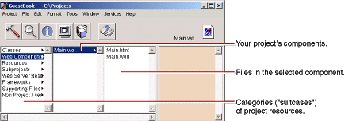
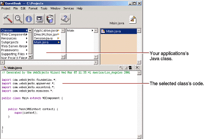

| PATH |

Project Builder displays a browser showing the contents of your project. The first column lists several categories of files that your project may contain. This section describes some of the most important files you'll use.

The next column displays a list with one element, Main.wo,
which is a directory containing the first component in
your application. In WebObjects terminology, a component represents
a page in your application (or possibly part of a page). The Main component
is the starting point of your application.
Main.wo.The files you see displayed in the next column are some of the files you work with when developing your component:
Main.html is
the HTML template for your page. It can include tags for dynamic WebObjects
elements as well as regular HTML. Typically, you do not edit this
file directly; you create your page's elements graphically using
WebObjects Builder.Main.wod is the
declarations file that specifies bindings between the dynamic elements
and variables or methods in your scripts. Normally, you don't
edit this file directly; you use WebObjects Builder to generate
the bindings for you.
You'll see these files listed in the second column:
Main.java is
a file that allows you to specify behavior associated with the component.
You do this by writing code in Java using Project Builder. Application.java and Session.java are
other Java files that you may want to work with. Application.java defines application
variables that live as long as the application does. Session.java defines session
variables that exist for the lifetime of one user's
session. In "Enhancing Your Application" (page 39), you'll
add code to Application.java and
learn more about application and session variables.DirectAction.java defines
a subclass of WODirectAction that you use as a container class for
your action methods. You can rename this class or create multiple
subclasses of WODirectAction depending on your application needs.
© 2001 Apple Computer, Inc.